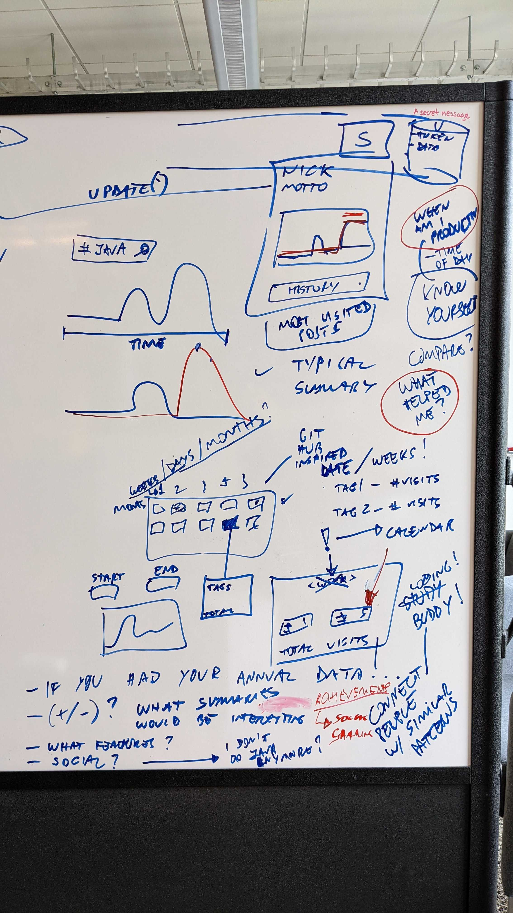
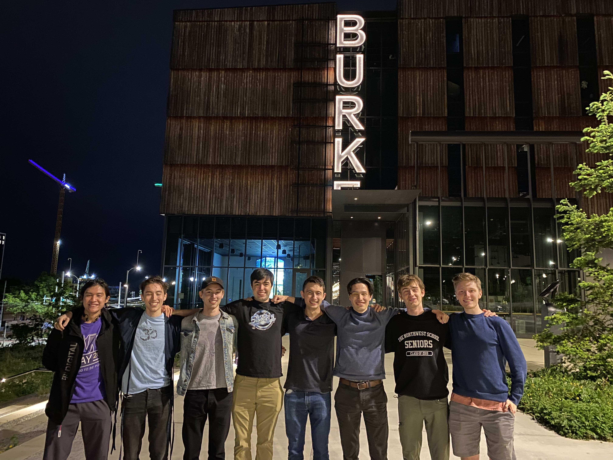

Some terrible, terrible Gradescope assignment scores towards the end of Summer 2020. I wasn't adjusting to online classes well—I didn't pay attention in lectures, and I often would just not do most of my assignments.
It was not a good time, and it didn't help that I was trying to also work on Ghost Pacer. I ended up taking Fall 2020 off entirely because of how little I was enjoying online classes.
A screenshot of my Old School Runescape character overview. The game is mostly just about clicking on things while watching numbers go up, and I played entirely too much of it while taking online classes.
This screenshot is recent, but much of that playtime stat was achieved in 2020 and 2021 during online lectures.
A photo of me from Fall 2021, wearing Wing Dome's 7-Alarm Challenge shirt after finishing the challenge. One of my friends says I looked like an animal while I was eating, which makes sense because I don't have a lot of spice tolerance;
I just went in there ready to eat all of the wings or die trying. I've never had an out-of-body experience outside of that challenge. It was a good time.
A video of me hitting a heavy squat PR at the end of Fall 2021. I'd enjoyed pushing my limits in the gym for a while before this, and that was a big milestone for me.
I did burst a small blood vessel in my eye while hitting that PR and have dialed the intensity back a bit since, but I still enjoy working out.

Some brainstorming I did with Dr. Nigini Oliviera while trying my hand at HCI research in Spring 2022. It was fun, but didn't end up working out for me as a long-term commitment.
My experience working with Dr. Oliveira this quarter was somewhat different than I was expecting, which I was (somewhat paradoxically) actually expecting since I had no prior understanding of how research at a university worked. I came in thinking I would spend the majority of my time coding, but I ended up spending most of my time thinking about designs and talking to other people about them, and I now have a better appreciation of the importance of some aspects of software development that don't necessarily involve coding.
Through working with Dr. Oliveira this quarter, I learned a lot both about research and about software development. While I certainly wouldn't call myself an expert after one quarter, I now know a little more about what might go on in a research lab. This quarter, most of my work was on redesigning Stako, an existing tool for studying how websites for programming help like Stack Overflow might provide more group-focused experiences, so most of what I learned revolved around that. In particular, I got to know a bit more about how to structure casual conversations to get constructive design feedback ("Would you find it interesting if you were about to view all of your development-related web browsing data?", "What kinds of summaries might you be interested in seeing? For example...", etc.).
My main contribution to Dr. Oliveira's research so far this quarter has been helping to update Stako to Manifest V3 so that it could continue to run on Google Chrome. I have also been helping with redesigning the browser extension to better support users, particularly by looking into better ways to show users summaries of their data and thinking of potential social functionalities to add in the future. In the next week or so, I hope to work towards implementing one such summary into the extension.
A photo from Fall 2022 of me and a few housemates performing "22" by Taylor Swift at a friend's 22nd birthday party.
I started picking up the guitar in Fall 2021 when some of the people I had moved in with brought guitars, and it's been a lot of fun.

Me (far left) and everyone I've been living with since Fall 2021 <3
This photo was taken in front of the Burke Museum after we met up for dinner in Spring 2022.
That's all!
Thanks for reading my portfolio!